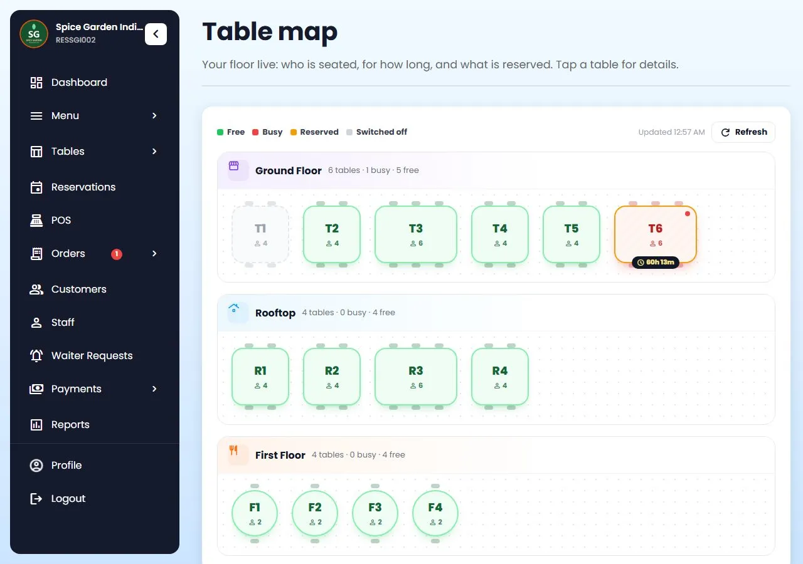
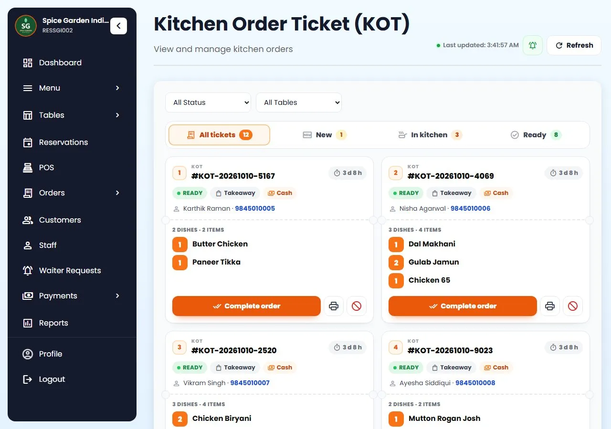
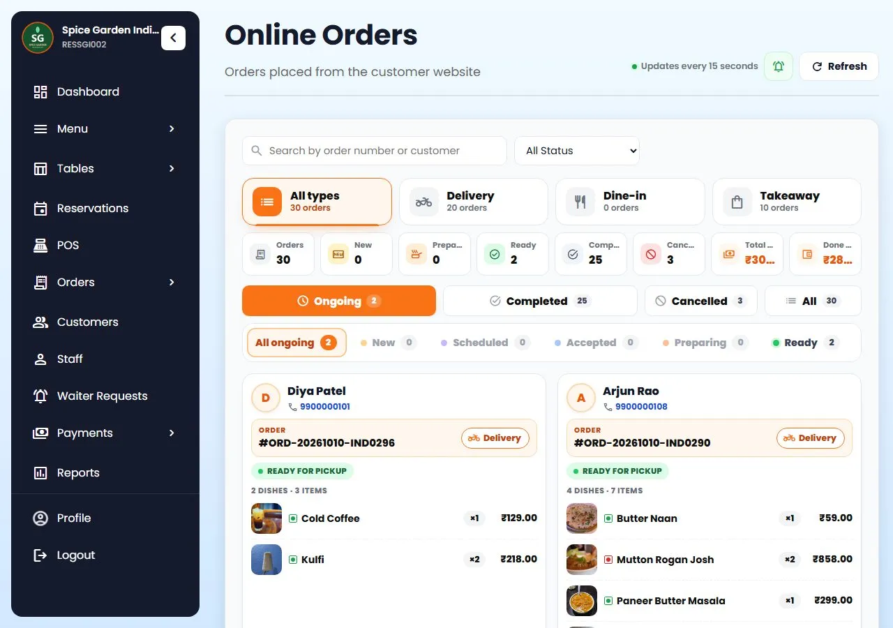

Restaurant POS software
Bill at the counter, send KOTs to the kitchen and drinks to the bar, see every table at a glance, and give each staff member a login that shows only their job. On the devices you already have.

What a POS should do
Billing is one part of it. A restaurant POS system also has to get each order to the right person: the chef, the bartender, the waiter taking it to table 6. Restro Grow connects all of them, so an order taken at the counter, on a waiter's phone or from a table QR shows up where it is needed.
Only need fast billing? Start with restaurant billing software. Want the full picture? See everything Restro Grow does.
Kitchen display
Orders from the counter, a waiter's phone and table QR codes become KOTs. Chefs work from a screen, from printed tickets, or both.

Bar Order Tickets
Mark a category, or a single dish, as made at the bar. When an order has both, Restro Grow makes a KOT for the kitchen and a BOT for the bar, each with its own number.
One order list
Orders from your own ordering website, table QR codes and WhatsApp sit next to counter bills. A new-order alert keeps ringing on the dashboard until someone accepts it.

Run the whole floor
Included in Restro Grow, and all in the product today.
Every table by area: free, busy (and for how long), reserved or switched off.
Guests book a table online, and the same table can't be booked twice for the same time.
Manager, Waiter, Chef, Bartender, Cashier and Delivery rider. Each login sees only the screens for that job.
Apps for the owner and for waiters, chefs and managers, with alerts for new orders, waiter calls and food that's ready.
Save a recipe for each dish and stock goes down as orders are made. Low-stock alerts, and dishes go sold out by themselves.
If the internet drops, the POS keeps billing and the bills sync when it's back.
Switch between branches from one login and compare today's numbers side by side.
Sales, top dishes, busiest hours, cancel reasons, and a menu analysis that shows which dishes earn and which don't.
Who cancelled an order, gave a discount or changed a price, and when.
How it works
Your restaurant's name, phone and city. No credit card.
Dishes with prices, tables by area, and a login for each staff member by role.
Choose what's made at the bar, connect printers, or open the kitchen screen on a tablet.
Bill at the counter, let waiters take orders on their phones, and watch the tickets move.
Stuck on a step? Call or WhatsApp +91 63775 68749 and we'll set it up with you.
Questions
Something else? Message us on WhatsApp and talk to a person.
Chat on WhatsAppIt runs in the browser on an Android tablet, iPad, Windows PC or phone, and there are apps for the owner and for staff. You don't need special POS hardware.
Either. Print KOTs on a thermal printer, open the kitchen display on any tablet with a browser, or use both.
Yes. Mark the categories or dishes made at the bar. Those items go on a Bar Order Ticket (BOT) to the bar screen and the bar printer, while the food goes on the KOT to the kitchen.
Yes. Each person gets a login with a role: Manager, Waiter, Chef, Bartender, Cashier or Delivery rider. Each role sees only its own screens, and the activity log shows who did what.
Not inside the POS today. Many owners keep the delivery apps for new customers and use QR codes, WhatsApp and loyalty in Restro Grow to bring regulars to their own website, where there is no commission.
The POS keeps billing offline and the bills sync by themselves when the internet is back. Loyalty points need the internet.
Yes. The Multiple Locations plan gives owners a branch switcher to compare today's numbers per branch and open any branch from one login.
Yes. Call or WhatsApp +91 63775 68749 and we'll set it up with you.
Keep reading
Counter, kitchen, bar and tables on one system, set up this afternoon.
7-day free trial on every plan. No credit card needed, cancel anytime, set up in about 5 minutes. See plans and pricing.